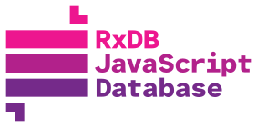

What is a Local Database and Why RxDB is the Best Local Database for JavaScript Applications
A local database is a data storage system residing on a user's device, allowing applications to store, query, and manipulate information without needing continuous network access. This approach prioritizes quick data retrieval, efficient updates, and the ability to function in offline-first scenarios. In contrast, server-based databases require an active internet connection for each request and response cycle, making them more vulnerable to latency, network disruptions, and downtime.
Local databases often leverage technologies such as IndexedDB, SQLite, or WebSQL (though WebSQL has been deprecated). These technologies manage both structured data (like relational tables) and unstructured data (such as JSON documents). When connectivity is restored, local databases typically sync their changes back to a central server-side database, maintaining consistent and up-to-date records across multiple devices.
Use Cases of Local Databases
Local databases are particularly beneficial for:
- Offline Functionality: Essential for apps that must remain usable without a consistent internet connection, such as note-taking apps or offline-first CRMs. Users can continue adding and editing data, then sync changes once they reconnect.
- Low Latency: By reducing round-trips to remote servers, local databases enable real-time responsiveness. This feature is critical for interactive applications such as gaming platforms, data dashboards, or analytics tools that need near-instant feedback.
- Data Synchronization: Many modern applications - like chat systems or collaborative editing tools - require continuous data exchange between multiple users or devices. Local databases can handle intermittent connectivity gracefully, queuing updates locally and syncing them when possible.
In addition, local databases are increasingly integral to Progressive Web Apps (PWAs), offering a native app-like user experience that is fast and available, even when offline.
Performance Optimization
The primary performance benefit of a local database is its proximity to the application: queries and updates happen directly on the user's device, eliminating the overhead of multiple network hops. Common optimizations include:
- Caching: Storing frequently accessed data in memory or on disk to minimize expensive operations.
- Batching Writes: Grouping database operations into a single write transaction to reduce overhead and lock contention.
- Efficient Indexing: Using appropriate indexes to speed up queries, especially important for applications that handle large data sets or frequent lookups.
These techniques ensure that local databases run smoothly, even on lower-powered or mobile devices.

Security and Encryption
Storing data on user devices introduces unique security considerations, such as the risk of physical theft or unauthorized access. Consequently, many local databases support encryption options to safeguard sensitive information. Developers can implement additional security measures like device-level encryption, secure storage plugins, and user authentication to further protect data from prying eyes.

Why RxDB is Optimized for JavaScript Applications
RxDB (Reactive Database) is an offline-first, NoSQL database designed to meet the needs of modern JavaScript applications. Built with a focus on reactivity and real-time data handling, RxDB excels in scenarios where low-latency, offline availability, and scalability are essential.
Real-Time Reactivity
At the core of RxDB is reactive programming, allowing you to subscribe to changes in your data collections and receive immediate UI updates when records change - no manual polling or refetching required. For instance, a chat application can display incoming messages as soon as they arrive, maintaining a smooth and responsive experience.

Offline-First Support
RxDB's primary design goal is to work seamlessly in offline environments. Even if your device loses internet connectivity, RxDB enables you to continue reading and writing data. Once the connection is restored, all pending changes are automatically synchronized with your backend. This offline-first approach is ideal for productivity apps, field service tools, and other scenarios where reliability and user autonomy are paramount.
Flexible Data Replication
A standout feature of RxDB is its bi-directional replication. It supports synchronization with a variety of backends, such as:
- CouchDB: Via the CouchDB replication, facilitating easy integration with any Couch-compatible server.
- GraphQL Endpoints: Through community plugins, developers can replicate JSON documents to and from GraphQL servers.
- Custom Backends: RxDB provides hooks to build custom replication strategies for proprietary or specialized server APIs.
This flexibility ensures that RxDB fits into diverse architectures without locking you into a single vendor or technology stack.
Schema Validation and Versioning
Rather than relying on implicit data models, RxDB leverages JSON schema to define document structures. This approach promotes data consistency by enforcing constraints such as required fields and acceptable data formats. As your application grows and changes, RxDB's built-in schema versioning and migration tools help you evolve your database schema safely, minimizing risks of data corruption or loss.
Rich Plugin Ecosystem
One of RxDB's greatest strengths is its pluggable architecture, allowing you to add functionality as needed:
- Encryption: Secure your data at rest using advanced encryption plugins.
- Full-Text Search: Integrate powerful text search capabilities for applications that require quick and flexible query options.
- Storage Adapters: Swap out the underlying storage layer (e.g., IndexedDB in the browser, SQLite in React Native, or a custom engine) without rewriting your application logic.
You can fine-tune RxDB to your exact needs, avoiding the performance overhead of unnecessary features.
Multi-Platform Compatibility
RxDB is a perfect fit for cross-platform development, as it supports numerous environments:
- Browsers (IndexedDB): For web and PWA projects.
- Node.js: Ideal for server-side rendering or background services.
- React Native: Leverage SQLite or other adapters for mobile app development.
- Electron: Create offline-capable desktop apps with a unified codebase.
This versatility empowers teams to reuse application logic across multiple platforms while maintaining a consistent data model.
Performance Optimization
With lazy loading of data and the ability to utilize efficient storage engines, RxDB delivers high-speed operations and quick response times. By minimizing disk I/O and leveraging indexes effectively, RxDB ensures that even large-scale applications remain performant. Its reactive nature also helps avoid unnecessary re-renders, improving the end-user experience.
Proven Reliability
RxDB is battle-tested in production environments, handling use cases from small single-user applications to large-scale enterprise solutions. Its robust replication mechanism resolves conflicts, manages concurrent writes, and ensures data integrity. The active open-source community provides ongoing support, documentation updates, and feature improvements.
Developer-Friendly Features
For developers, RxDB offers:
- Straightforward APIs: Built on top of familiar JavaScript paradigms like promises and observables.
- Excellent Documentation: Detailed guides, tutorials, and references for every major feature.
- Rich Community Support: Benefit from an active ecosystem of contributors creating plugins, answering questions, and maintaining core libraries.
These qualities streamline development, making RxDB an appealing choice for teams of all sizes.
FAQ
What is the main advantage of a local database?
A local database provides data storage on the user device. This eliminates the need for continuous internet access. You achieve near-instant data retrieval and fast updates. An offline-first application requires a local database to function without a network connection. You reduce server load and bandwidth costs. You provide a smooth user experience regardless of network conditions.
What is a local database and how does it compare to cloud databases?
A local database runs directly on a user's device (e.g., a smartphone or browser) or local network rather than on a remote cloud server. The primary difference is where the data lives and computes. Local databases provide instant access, zero network latency, and robust offline capabilities, granting complete control over the application's data. Cloud databases rely exclusively on an active internet connection, abstract away infrastructure management, and are inherently centralized, making them great for heavy computing workloads but explicitly dependent on network stability.
What is an embedded database and when should you use one?
An embedded database (such as SQLite or RxDB) is tightly integrated into the application software itself rather than running as an independent standalone service. You should use one when deploying client-side applications such as mobile apps, desktop binaries via Electron, or browser-based Progressive Web Apps that require low-latency data access, offline-first behavior, or when you want to avoid the administrative overhead of maintaining a separate remote database cluster.
What offline databases support resilient data synchronization?
For modern JavaScript and TypeScript applications, RxDB provides resilient, offline-first synchronization with automated conflict resolution through endpoints spanning CouchDB, GraphQL, or even peer-to-peer networks via WebRTC. Other ecosystem alternatives include PouchDB, WatermelonDB, and cloud-provider SDKs like Firebase Firestore and Supabase, though RxDB offers the most flexible, storage-agnostic reactivity model.
What database should I use for an app that can't rely on constant internet access?
An app that cannot rely on constant internet must utilize a Local-First or Offline-First architecture. A local document database like RxDB handles all read and write queries instantly on the device's storage (such as IndexedDB or SQLite). A background replication process then synchronizes the local state with your central backend whenever connectivity is restored.
What are the core advantages of using local databases?
The core advantages include Zero Latency (data is fetched locally without round-trip network delays), Offline Functionality (the app remains completely usable during network drops or in airplane mode), Reduced Server Costs (querying and complex data manipulations happen on the client's own hardware instead of expensive cloud servers), and Improved Privacy (sensitive user information can be encrypted and processed entirely on the native device before synchronizing).
What is the best database for a Node.js environment?
The "best" database for Node.js depends entirely on your application's architecture. For traditional, heavy-duty server clusters, PostgreSQL or MongoDB are standard. However, for offline-first tools, edge environments, or standalone applications, an embedded local database like SQLite or a JavaScript-native engine via RxDB's native filesystem storage provides exceptional, low-latency data access without requiring external database dependencies.
What software and architecture is used to create robust offline local applications?
Robust offline applications rely on an Offline-First (or Local-First) architecture. This involves storing data in a client-side database (like IndexedDB or SQLite) and wrapping it with a reactive state layer like RxDB to instantly serve the UI. A background replication engine then continually coordinates local changes with a cloud backend whenever network connectivity is restored.
What is a document-oriented database compared to a relational local database?
A document-oriented database (such as RxDB or MongoDB) stores data as flexible JSON documents. This heavily aligns with JavaScript's native object structures and is ideal for continuously evolving data models. A relational local database (such as SQLite) strictly organizes data into rows and columns using rigid schemas. While relational databases are heavily optimized for complex JOIN queries, document databases offer substantially faster iteration speeds and simpler serialization for modern frontend frameworks.
Follow Up
Ready to get started? Here are some next steps:
- Try the Quickstart Tutorial and build a basic project to see RxDB in action.
- Compare RxDB with other local database solutions to determine the best fit for your unique requirements.
Ultimately, RxDB is more than just a database - it's a robust, reactive toolkit that empowers you to build fast, resilient, and user-centric applications. Whether you're creating an offline-first note-taking app or a real-time collaborative platform, RxDB can handle your local storage needs with ease and flexibility.